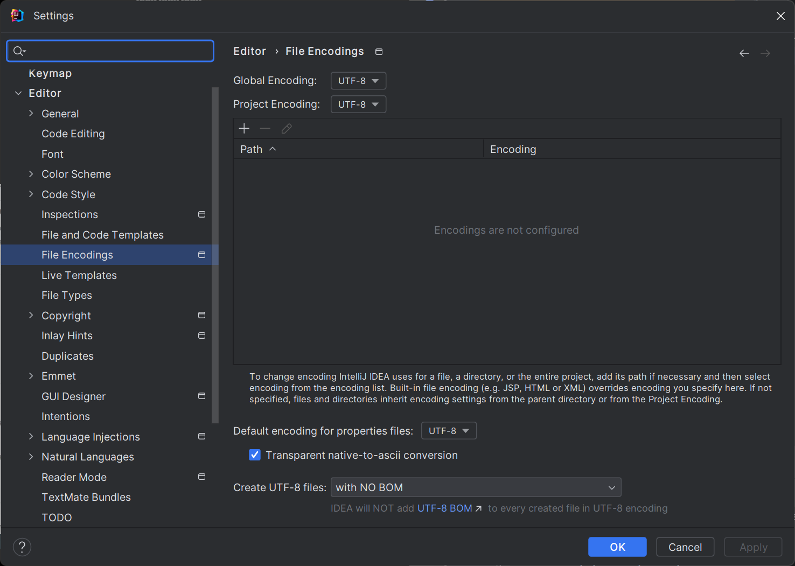
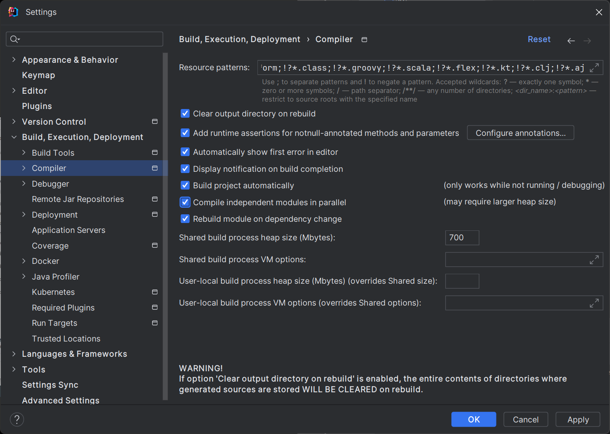
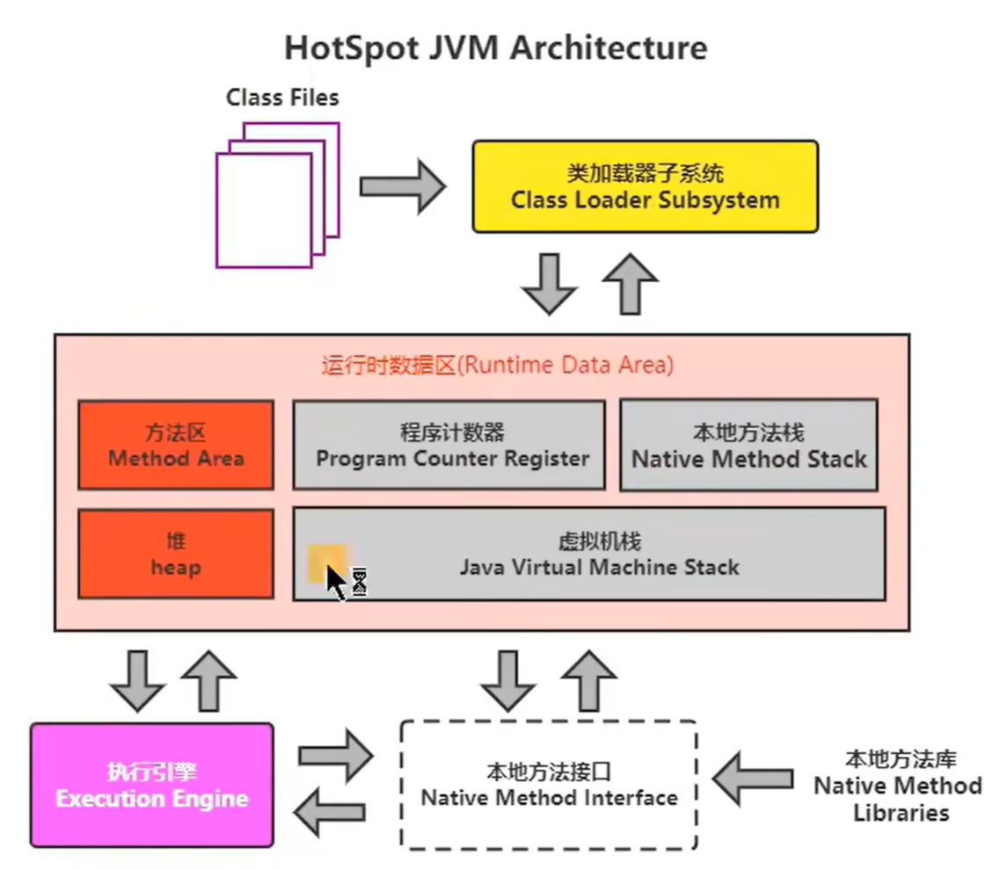

Java基本语法
1 Java语言概述
简要介绍
- Java是学习JavaEE后台、大数据、Android开发的基石
- 常用的DOS命令
- DOS（Disk Operating System，磁盘操作系统）是微软公司在Windows之前推出的一个操作系统，是单用户、单任务的操作系统。后来被Windows系统取代
- md：创建文件夹
- cd：跳转路径
- rd：删除文件夹
- del：删除文件
- cls：清屏
- Talk is cheap, show me your code
- Java是SUN公司于1995年推出的高级编程语言
- Java之父：Gosling（詹姆斯 高斯林）
- Java在1.2版本开始分成了J2SE（标准版）、J2EE（企业版）、J2ME（小型版）
- Java从5.0版本开始不再采用1.几的版本编号，平台更名为JavaSE、JavaEE、JavaME
- Java 8.0是5.0以来变化最大的版本，长期支持版本LST，2014年
- Java9.0开始每半年更新一次，每年3月和9月就发布新版本
- JavaSE 标准版
- 支持面向桌面级应用的Java平台
- JavaEE 企业版
- 服务器端Web应用开发
- JavaME 小型版
- 移动终端
Android开发不等同于Java ME开发
开发环境搭建
- JDK（Java Development Kit）：Java程序开发工具包，包含JRE和开发人员使用的工具
- JRE（Java Runtime Environment）：Java程序的运行时环境，包含JVM和运行时所需要的核心类库
- 本文档采用Java8.0和Java17.0对比参考学习，主要使用Java17
- 安装完Java17后，会自动在系统环境变量path中添加
C:\Program Files\Common Files\Oracle\Java\javapath，这个路径自动映射到我们选择安装的路径下面。 - 我们采用JAVA_HOME的方式进行环境变量的配置，将上面自动添加的也不做修改，只是让%JAVA_HOME%。（至于为什么不删除，我也不知道）
HelloWorld
Java程序开发：编写、编译、运行
将源代码写到.java的源文件中
通过javac命令对该java文件进行编译，生成一个或多个字节码文件.class
通过java命令对生成的class文件进行运行
在HelloWorld.java文件中编写代码如下：
1
2
3
4
5class HelloChina {
public static void main(String[] args) {
System.out.println("Hello World!");
}
}命令javac HelloWorld.java编译生成HelloChina.class字节码文件
命令java HelloChina运行该字节码文件，得到结果
编译以后，会生成一个或多个字节码文件，每一个字节码文件对应一个Java类，并且字节码文件名与类名相同在一个源文件中，只允许一个类是public的，并且要求该类名要与源文件名相同
注释
单行注释
1
// 单行注释多行数值
1
2
3/*
多行注释
*/单行注释和多行注释中的信息不参与编译，字节码文件中不包含注释信息
文档注释
1
2
3
4/**
@author 指定java程序的作者
@version 指定源文件的版本
*/文档注释内容可以被JDK提供的工具 javadoc 所解析，生成一套以网页文件形式体现的该程序的说明文档
文档注释必须写在类、接口、方法、构造器、成员字段前面，而写在其他位置，比如函数内部，是无效的文档注释。
命令：
1
javadoc -d mydoc -author -version HelloWorld.java-d mydoc：mydoc为输出文档的文件夹
-author -version为指定输出的内容
HelloWorld.java为指定的java源文件
在生成的文件夹下查看index.html即可查看对应的文档
在类或者方法上面写文档注释也会在生成文档中显示
API文档
- API 应用程序接口
- Java 17 文档在线注释：https://docs.oracle.com/en/java/javase/17/docs/api/index.html
JVM
- Java的优点：
- 跨平台性：程序运行在JVM上，Write Once, Run Anywhere
- 面向对象性
- 健壮性
- 安全性高
- 简单性
- 高性能
- 有许多性能优化机制，比之前性能提升了几十倍，比如JIT（Just In Time）即时编译技术
- Java的缺点：
- 语法复杂
- 适合大型网站开发，架构重
- 并非适用于所有领域
- JVM功能
- 实现Java的跨平台性
- 内存管理（分配和回收）
Java还是存在内存溢出和内存泄漏的可能
补充
- Java是一个半编译半解释型语言
- 目前主流的商用Java虚拟机（如HotSpot、OpenJ9）里，Java程序最初都是通过解释器 (Interpreter）进行解释执行的，当虚拟机发现某个方法或代码块的运行特别频繁，就会把这些代码认 定为“热点代码”（Hot Spot Code），为了提高热点代码的执行效率，在运行时，虚拟机将会把这些代码编译成本地机器码，并以各种手段尽可能地进行代码优化（运行时完成这个任务的后端编译器被称为即时编译器，JIT，Just In Time）
- 之前编译成字节码文件的编译器称为前端编译器，后面的JIT编译器称为后端编译器
- 并不是所有的JVM都采用解释器与编译器并存的运行架构
2 变量与运算符
关键字
- 关键字 keyword：被Java语言赋予了特殊的含义，用作专门用途的字符串（或单词）
- 关键字都是小写字母
- 关键字参考链接：https://docs.oracle.com/javase/tutorial/java/nutsandbolts/_keywords.html
标识符
- Java中变量、方法、类等要素命名时使用的字符序列，称为标识符
- 规则：
- 由26个英文字母大小写，0-9，_ 或 $ 组成
- 数字不可用开头
- 不可用使用关键字和保留字，但能包含关键字和保留字
- Java中严格区分大小写，长度无限制
- 标识符不能包含空格
- 规范
- 包名：多单词组成时所有字母都小写
- 类名、接口名：大驼峰
- 变量名、方法名：小驼峰
- 常量名：所有字母大写，多单词用下划线连接
变量
- 变量是内存中的一个存储区域
变量类型 变量名 = 变量值- Java是强类型语言
- Java中的变量类型
- 基本数据类型
- 整型：
- byte：1字节；\(-128\sim127\)
- short：2字节；\(-2^{15}\sim 2^{15}-1\)
- int：4字节；\(-2^{31}\sim 2^{31}\)；默认
- long：8字节；\(-2^{63}\sim 2^{63}\)；赋值时需要以“l”或“L”作为后缀
- 浮点型：
- float：4字节；\(-3.403E38\sim 3.403E38\)；赋值时需要以“f”或“F”作为后缀；float表数范围要比long类型的表数范围更大，但是精度不高
- double：8字节；\(-1.798E308\sim 1.798E308\)；默认
- 并不是所有小数都可以精确的用二进制浮点数表示，二进制浮点数不能精确表示0.1，0.01，0.001这样10的负次幂。
- float、double不适合在不容许舍入误差的金融计算领域，如果需要精确数字计算或保留指定位数的精度，需要使用
BigDecimal类
- 字符型：
- char ：2字节；Java中所有字符都使用Unicode编码；
- 布尔型：
- boolean：4字节；只能是true和false，不能是0或1，与C语言不同
- Java虚拟机中没有任何提供boolean值专用的字节码指示，在编译之后都使用java虚拟机中的int数据类型来代替，true用1表示，false用0表示
- 整型：
- 引用数据类型
- 类 class
- 数组 array
- 接口 interface
- 枚举 enum
- 注解 annotation
- 记录 record
- 基本数据类型
- 同一个作用域内不能声明两个同名的变量
运算规则
boolean不能参与运算，只有其他7种可以做运算
运算规则
- 自动类型提升
- 强制类型转换
当容量小的变量与容量大的变量做运算时，结果自动转换为容量大的数据类型
byte和short任意组合运算，结果是int类型强制类型转换
1
2double num1 = 1.234;
int num2 = (int)num1;- 强制类型转换可能会导致精度损失
与String的运算
- String是引用数据类型，可以使用
""进行赋值 - String与基本数据类型变量只能做连接运算，使用
+表示 - boolean参与运算也是把true或false直接进行拼接
底层存储方式
- 进制
- 二进制：以
0b或0B开头 - 八进制：以数字
0开头 - 十六进制：以
0x或0X开头
- 二进制：以
- 二进制
- 二进制是由德国数理哲学大师莱布尼茨发明（就是微积分里面的那个人）
- 进制转换
- 二进制->十进制
- 计算机存储使用
二进制补码形式存储，并且最高位是符号位 - 正数：最高位是0
- 负数：最高位是1
- 计算机存储使用
- 规定
- 正数的补码与反码、原码一样，称为三码合一
- 负数的补码与反码、原码不一样
- 负数的
原码：把十进制转换为二进制，然后最高位设置为1 - 负数的
反码：在原码基础上，最高位不变，其余位去反 - 负数的
补码：反码 + 1
- 负数的
- 二进制->十进制
- 二进制转八进制
- 从低位到高位，每三个二进制看成一组，转换成八进制数
- 二进制转十六进制
- 从低位到高位，每四个二进制看成一组，转换成十六进制数
运算符
- 按照功能分类：
- 算数运算符：+，-，*，/，%，++，--
- 赋值运算符：=，+=，-=，*=，/=，%=，>>=，<<=，>>>=，&=，|=，^=等
- 比较（关系）运算符：>，>=，<，<=，==，!=，instanceof（检测是否是类的对象）
- 逻辑运算符：&，|，^，!，&&，||
- 位运算符：&，|，^，~，<<，>>，>>>
- 条件运算符：(条件表达式)?结果1:结果2
- Lambda运算符：->（后面讲解）
- 按照操作数个数分类
- 一元运算符（单目运算符）
- 二元运算符（双目运算符）
- 三元运算符（三目运算符）
3 流程控制语句
- 流程控制语句是用来控制程序中各语句执行顺序的语句，可以把语句组合成能完成一定功能的小逻辑模块。
- 程序设计中规定的三种流程结构，即：
- 顺序结构
- 分支结构
- if...else
- switch-case
- 循环结构
- for
- while
- do-while
- JDK5.0提供了foreach循环，方便的遍历集合、数组元素
顺序结构
- 一般写的代码都是顺序结构，Java中定义变量时采用合法的前向引用
分支结构
- if...else
1 | |
- switch-case
1 | |
- switch 中的表达式结果只能是 byte short char int 枚举(JDK5.0新增) String(JDK7.0新增)
循环结构
循环结构：在满足某些条件下，反复执行特定代码的功能
for
1
2
3for ( ; ; ) {
}while
1
2
3while () {
}do-while：至少执行一次循环体
1
2
3do {
} while ();循环结构四要素
- 初始化部分
- 循环条件部分
- 循环体部分
- 迭代部分
Scanner
在Java中我们通过Scanner类获取键盘输入
步骤
- 导包：
import java.utils.Scanner; - 创建Scanner类型对象：
Scanner scan = new Scanner(System.in); - 调用方法：
next() / nextXxx()- next接收字符串
- nextXxx接收其他基本类型
- 释放资源：
scan.close();
- 导包：
根据相应的方法来输入指定类型的值，如果输入的数据类型与要求的类型不匹配时，会报异常导致程序终止。
Scanner类中提供了byte short int long float double boolean String 类型变量的方法，但是没有获取char类型的方法，可以通过接收String类型然后获取第一个字符的方式：
1
char c = scan.next().charAt(0);
随机数
- Java中的lang包下有一个Math类，该类有一个random方法返回一个\([0.0,1.0)\)范围内的double值
- 其他任何范围或精度都可以通过对其返回的double值进行放缩得到
break&continue
- break：适用于switch-case结构、循环结构；结束
当前循环 - continue：适用于循环结构；结束
当次循环
4 IDEA
- IDEA是JetBrains公司的产品，该公司总部位于捷克的布拉格。
- 分为两个版本
更改设置
- 在
File-Project Structure中可以进行JDK的切换 - 自动导包：在
File-Setting-Editor-General-Auto Import中将Add unambiguous import on the fly和Optimize imports on the fly的两个勾选上 - 项目编码修改为UTF-8：

- 设置自动编译

工程与模块
- 层级关系：project - module - package - class
- 删除module步骤
- 先右键选择Remove Module
- 再右键选择Delete
- Module迁移
- 将Module复制到本项目与其他Module同级的路径下，然后打开Project Settings选择Module，Import该Module
- 单独设置某一路径的编解码格式：Settings - Editor - File Encodings，点击加号选择路径并选择格式即可
5 数组
数组本身是引用数据类型，数组中的元素可以使任何数据类型，数组在内存中是一整块连续的空间
声明和初始化语句
1
2
3
4
5
6// 方式1：数组初始化和赋值分开
元素类型[] 数组名 = new 元素类型[n];
// 方式2：数组初始化和赋值同时
元素类型[] 数组名 = new 元素类型[] {元素1, 元素2, ... , 元素n};
// 方式2的省略，使用类型推断
元素类型[] 数组名 = {元素1, 元素2, ... , 元素n};- 一旦初始化后，长度就确定了，且不可更改
长度：length属性获取数组长度
遍历：for循环
默认值
- 整型：0
- 浮点型：0.0
- 字符型：0 / 000
- 布尔型：false
- 引用数据类型：null
内存结构
- 为了提高运算效率，Java虚拟机对空间进行了不同区域的划分，每一片区域都有特定的数据处理方式和内存管理方式
- JVM由三个独立部分组成（
类运执）- 类加载子系统
- 运行时数据区（
两栈堆区器）- 虚拟机栈：存储正在执行的每个Java方法的局部变量表等。局部变量表存放了编译期可知长度的各种基本数据类型、对象引用、方法执行完、自动释放。
- 堆内存：存储对象（包括数组对象），new来创建的，都存储在堆内存
- 方法区：存储已被虚拟机加载的类信息、常量、（静态变量）、即时编译器编译后的代码等数据
- 本地方法栈：当程序中调用了native的本地方法时，本地方法执行期间的内存区域
- 程序计数器：是CPU中的寄存器，包含每一个线程下一条要执行的指令的地址
- 执行引擎
- 图片解析
- 
- 与数组有关的内存结构
- 虚拟机栈：存放方法中声明的变量
- 堆：存放数组的实体（即数组中的所有元素）
多维数组
对于二维数组的理解，可以看做是一维数组又作为另一个一维数组的元素存在
从数组底层运行机制来看，其实没有多维数组
声明和初始化
1
2
3
4
5
6// 二维数组静态初始化
元素类型[][] 数组名称 = new 元素类型[][]{{...},{...},{...}};
元素类型[][] 数组名称 = {{...},{...},{...}};
// 二维数组动态初始化
元素类型[][] 数组名称 = new 元素类型[2][3];
元素类型[][] 数组名称 = new 元素类型[2][];调用.length方法获取长度，内层就调用该元素数组的.length
一旦声明了元素数组的长度，那么该元素存储的就是该元素数组的地址值，如果没有声明长度，那么就是null，结合上面动态初始化两种方式进行理解。
遍历
1
2
3
4
5
6int[][] nums = new int[2][3];
for (int i = 0; i < nums.length; i++) {
for (int j = 0; j < nums[i].length; j++) {
System.out.println(nums[i][j]);
}
}
数组常见算法
- 数组元素反转
- 数组扩容
- 元素查找
- 数组排序
Arrays工具类
java.utils.Arrays为操作数组的工具类，包含了用来操作数组的各方方法（比如排序或搜索）
常用操作
1
2
3
4
5
6
7
8
9
10// 判断两个数组是否相等
boolean Arrays.equals(int[] a, int[] b);
// 输出数组元素信息
String Arrays.toString(int[] a);
// 将指定值填充到数组之中
void Arrays.fill(int[] a, int val);
// 快速排序
void Arrays.sort(int[] a);
// 二分查找，数组必须有序
void Arrays.binarySearch(int[] a, int key);